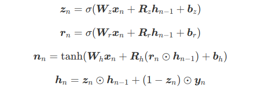

Online Demo
Figure 1 shows the model architecture of SegBot. For EDU segmentation, the units in the input $ U0 \ to \ U8 $ are words in a sentence. Formally, given an input sequence $ U = (U_1, U_2, … , U_N) $ of length $N$, we get its distributed representations $ X = (x_1, x_2, … , x_N $ by looking up the corresponding embedding matrix, where $x_n \in R^k$ is the representation for the unit $U_n$ with $K$ being the dimensions. Our ultimate goal is to split the input sequence into contiguous segments by identifying the boundaries (e.g. $U2$, $U6$, and $U8$ in Figure 1). SEGBOT consists of three components: encoding phase, decoding phase and pointing phase.
1. Encoding Phase:
We encode the input sequence $\boldsymbol{X}=(\boldsymbol{x}_1,\boldsymbol{x}_2, \ldots, \boldsymbol{x}_N)$ using a RNN. RNNs capture sequential dependencies, and with hidden cells like long short-term memory (LSTM) and gated recurrent unit (GRU), it can capture long distance dependencies without running into the problems of gradient vanishing or explosion. In our model, we use GRU to encode input sequences, which is similar to LSTM but is computationally cheaper. The GRU activations at time step $n$ are computed as follows:

where $\sigma()$ is the sigmoid function, $tanh()$ is the hyperbolic tangent function, ⊙ is the element-wise multiplication, $z_n$ is update gate vector, $r_n$ is reset gate vector, $n_n$ is the new gate vector, and $h_n$ is the hidden state at time step $n$. $W$,$R$,$b$ are the parameters of the encoder that we need to learn. We use a bi-directional GRU (BiGRU) network to memorize past and future information in the input sequence. Specifically, each hidden state of BiGRU is formalized as:
$$\boldsymbol{h}_n =\overrightarrow {\boldsymbol{h}}_n \oplus \overleftarrow {\boldsymbol{h}}_n$$
where ⊕ indicates concatenation operation, $\overrightarrow {\boldsymbol{h}}_n$ and $\overleftarrow {\boldsymbol{h}}_n$ are hidden states of forward (left-to-right) and backward (right-to-left) GRUs, respectively. Assuming the size of the GRU layer is H , the encoder yields hidden states in $\boldsymbol{h} \in \mathbb{R}^{N \times 2H}$
2. Decoding Phase:
Since the number of boundaries in the output vary with the input, it is natural to use RNN-based models to decode the output. At each step, the decoder takes a start unit (i.e., start of a segment) $U_m$ in the input sequence as input and transforms it to its distributed representation $x_m$ by looking up the corresponding embedding matrix. It then passes $x_m$ through a GRU-based (unidirectional) hidden layer. Formally, the decoder hidden state at time step $m$ is computed by:
$$\boldsymbol{d}_m = GRU(\boldsymbol{x}_m,\boldsymbol{\theta})$$
where $\theta$ are the parameters in the hidden layer of the decoder, which has the same form as described by Equations (1) – (4). If the input sequence contains $M$ boundaries, the decoder produces hidden states in $d \in R^{M*H} with $H$ being the dimensions of the hidden layer.
3. Pointing Phase:
At each step, the output layer of our decoder computes a distribution over the possible positions in the input sequence for a possible segment boundary. For example, considering Figure 1, as the decoder starts with input $U0$, it computes an output distribution over all positions ($U0$ to $U8$) in the input sequence. Then, for $U$ as input, it computes an output distribution over positions $U4$ to $U8$, and finally for $U7$ as input, it computes a distribution over $U7$ to $U8$. Note that unlike traditional seq2seq models (e.g., the ones used in neural machine translation), where the output vocabulary is fixed, in our case the number of possible positions in the input sequence changes at each decoding step. To deal with this, we use a pointing mechanism in our decoder. Recall that $h \in R^{N×2H}$ and $d ∈ R ^{M×H}$ are the hidden states in the encoder and the decoder, respectively. We use an attention mechanism to compute the distribution over the possible positions in the input sequence at decoding step $m$:
$$u^m_j = \boldsymbol{v}^T \tanh (\boldsymbol{W}_1 \boldsymbol{h}_j +\boldsymbol{W}_2 \boldsymbol{d}_m), ~~for~ j \in (m, \ldots, M)$$
$$p(y_m|\boldsymbol{x}_m) = \textrm{softmax}(\boldsymbol{u}^m)$$
where $j \in [m,M]$ indicates a possible position in the input sequence, and softmax normalizes $u^m_j$ indicating the probability that the unit $U_j$ is a boundary given the start unit $U_m$.
4. Model Training
We use teacher forcing to train our model by supplying the ground-truth start units to decoder RNNs. This mechanism forces the RNNs to stay close to the ground-truth start units and segment boundaries. The loss function $\mathcal{L}$ is the negative log likelihood of boundary distribution over the whole training set $\mathcal{D}$, and can be written as:
$$ \mathcal{L}(\boldsymbol{\omega}) = \sum_{\mathcal{D}} \sum^M_m \log p(y_m|\boldsymbol{x}_m;\boldsymbol{\omega}) + \frac{\lambda}{2} ||\boldsymbol{\omega}||_2^2 $$
where $\omega$ are the trainable parameters of the model (encoder and decoder), and $\lambda$ is the strength of $L2$ regularization. When using the RNN decoder for prediction on test examples, the ground-truth boundaries are not available. Similar to traditional language models, we feed the input symbols based on the decoded symbol at the previous step, e.g., we feed $U4$ after predicting a boundary at $U3$ in Figure 1.
If you use the technique of this resource please cite.
@InProceedings{li-sun-joty-ijcai-18,
author = {Jing Li and Aixin Sun and Shafiq Joty},
title = {SegBot: A Generic Neural Text Segmentation Model with Pointer Network},
booktitle = {Proceedings of the 27th International Joint Conference on Artificial Intelligence and the 23rd European Conference on Artificial Intelligence},
month = {July},
year = {2018},
series = {IJCAI-ECAI-2018},
address = {Stockholm, Sweden},
publisher = {},
pages = {xx -- xx},
url = {http://138.197.118.157:8000/segbot/}
}